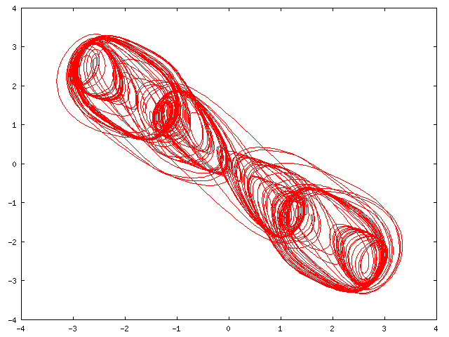

See also a Gallery of multispiral
Strange Attractors in the modified
Chua's system
See also a Gallery of multispiral
Strange Attractors in the modified
Chua's system
by Aziz Alaoui
Ref ,
in the Int. Journ. of Bifurcation and Chaos 9(6), 1009-1039, (1999), (IJBC).
See also a Gallery of multispiral
Strange Attractors in the modified
Chua's system
See also some multispiral
Strange Attractors in some
Brockett type system
See also the Gallery of multispiral
Strange Attractors in some
PWL Reich-Kapitaniak type
dynamical system
See also some multi-buckle
Strange Attractors in some
Van der pol type system
The state equations of this system are given by,
{dx}/{dt} = y - f_2(x), {dy}/{dt} = -alpha(x+y) + alpha . K sin(2.pi.Omega.t),
where x and y are functions of t, and f_2 is the Chua's nonlinearity, which is, here, modified to get multispiral attractors, and alpha, K omega are the parameters of the system.

A 4-spiral strange attractor exhibited by the modified nonautonmous system
Aziz Alaoui's home page